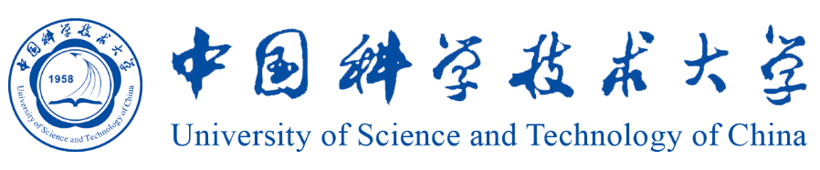

Residual Policy Learning Facilitates Efficiency Model-Free Autonomous Racing
Ruiqi Zhang, Jing Hou, Guang Chen*, Zhijun Li, Jianxiao Chen, Alois Knoll
Under Revision for IEEE Robotics and Automation Letters
[Pre-Print]
[Code]
We develop an efficient residual policy learning algorithm with modified artificial potential field for autonomous racing.
We propose a novel complementary property of MAPF and model-free DRL and illustrate robustness, generalization ability,
real-time performance, and lap time on 5 tracks of F1Tenth competition.
Experimental results show our method outperforms the state-of-the-art method Dreamer and reaches the comparable level of professional human players.
About Me
I am currently an undergraduate of Vehicle Engineering in Tongji University. I'm also a researcher of ISPC Group and supervised by Prof. Guang Chen. I will finish my undergraduate career in 2023 FALL and chase my PH.D. My research mainly focuses on Robotics, Reinforcement Learning, Autonomous Driving and Computer Vision.
Education
- Tongji University (2018 ~ Present) Bachelor's Degree in Automotive Engineering
Projects

PIPO: Policy Optimization with Permutation-Invariant Graph Network for Decentralized Multi-Agent Navigation
Ruiqi Zhang, Guang Chen*, Jing Hou, Zhijun Li
[Code]
Under Review by IEEE International Conference on Multi-Sensor Fusion and Integration (MFI 2022)
We propose a decentralized reinforcement learning method via graph convolutional network. Our method utilizes the permutation-invariant property in multi-agent system to enhance the representation and generalization ability of actor-critic network. Experimental results show our method is much safer than centralized MARL baselines and constrained barrier function-based methods and can be generalized to arbitrary number of agents.
Ruiqi Zhang, Guang Chen*, Jing Hou, Zhijun Li
[Code]
Under Review by IEEE International Conference on Multi-Sensor Fusion and Integration (MFI 2022)
We propose a decentralized reinforcement learning method via graph convolutional network. Our method utilizes the permutation-invariant property in multi-agent system to enhance the representation and generalization ability of actor-critic network. Experimental results show our method is much safer than centralized MARL baselines and constrained barrier function-based methods and can be generalized to arbitrary number of agents.
SPEEZE: High-Throughput Parallel Reinforcement Learning Framework
Jing Hou, Guang Chen*, Ruiqi Zhang, Zhijun Li, Changjun Jiang
Under Review by IEEE Transactions on Parallel and Distributed Systems
[Pre-Print] [Code]
In this paper, we propose a high-throughput RL framework Spreeze, which utilizes parallel GPUs to update actor-critic networks independently and achieve the asynchronous sampling through the lock mechanism and queue. The framework can automatically adjust the parallelization hyperparameters according to the computing power of the hardware device to achieve efficient large-batch updates. The simulation results show that our framework can achieve up to 15,000Hz experience sampling and 370,000Hz network update frame rate with only a personal desktop computer and significantly improve the training efficiency.
Jing Hou, Guang Chen*, Ruiqi Zhang, Zhijun Li, Changjun Jiang
Under Review by IEEE Transactions on Parallel and Distributed Systems
[Pre-Print] [Code]
In this paper, we propose a high-throughput RL framework Spreeze, which utilizes parallel GPUs to update actor-critic networks independently and achieve the asynchronous sampling through the lock mechanism and queue. The framework can automatically adjust the parallelization hyperparameters according to the computing power of the hardware device to achieve efficient large-batch updates. The simulation results show that our framework can achieve up to 15,000Hz experience sampling and 370,000Hz network update frame rate with only a personal desktop computer and significantly improve the training efficiency.
Globally-Optimal Inlier Maximization for Relative Pose Estimation under Planar Motion
Haotian Liu, Guang Chen*, Yinlong Liu, Zichen Liang, Ruiqi Zhang, Alois Knoll
Accepted by Frontiers in Neurorobotics [Paper]
This paper proposes a globally-optimal Branch-and-Bound (BnB) solver for relative pose estimation under general planar motion, which aims to figure out the globally-optimal solution even under a quite noisy environment. Through reasonable modification of the motion equation, we decouple the relative pose into relative rotation and translation so that a simplified bounding strategy can be applied. It enhances the efficiency of BnB technique. Experimental results support the global optimality and demonstrate that the proposed method performs more robustly than existing approaches.
Haotian Liu, Guang Chen*, Yinlong Liu, Zichen Liang, Ruiqi Zhang, Alois Knoll
Accepted by Frontiers in Neurorobotics [Paper]
This paper proposes a globally-optimal Branch-and-Bound (BnB) solver for relative pose estimation under general planar motion, which aims to figure out the globally-optimal solution even under a quite noisy environment. Through reasonable modification of the motion equation, we decouple the relative pose into relative rotation and translation so that a simplified bounding strategy can be applied. It enhances the efficiency of BnB technique. Experimental results support the global optimality and demonstrate that the proposed method performs more robustly than existing approaches.
Skills
- Programming Language: Python
- Deep Learning Framework: PyTorch, Tensorflow
- Machine Engineering: UX Graphics, Catia, AutoCAD
- Language: Chinese, English, German
Honors and Awards
- Scholarships @ Tongji University (2019, 2020)
- Formula Student Competition: 1st in FSC-2019 / 3rd in FSJ-2019 / 3rd in FSC-2020 / 2nd in FSC-2021
Experience
- FSAE Team TJU Racing: Chassis/Steering Group (2019 ~ Present)
Cooperation

Contact